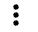

Primeiros Passos
1. Visão Geral
Neste módulo, você praticará a criação, teste e implantação de um fluxo no CDF PC. Você aprenderá a:
- Desenvolver fluxos usando o Flow Designer (low-code).
- Criar uma sessão de teste e testar um fluxo interativamente.
- Realizar o controle de versão de um fluxo no DataFlow Catalog.
- Implantar um fluxo em um cluster de produção com escalonamento automático (auto-scaling) no k8s.
Você também aprenderá as melhores práticas de design de fluxo, como:
- Criar fluxos autocontidos dentro de um Process Group.
- Parametrizar fluxos para reutilização.
- Definir nomes significativos para componentes de fluxo, incluindo filas (em vez de Success, Fail e Retry). Esses nomes serão usados para definir KPIs no CDF-PC.
O guia a seguir é um passo a passo para construir um fluxo de dados para uso dentro do CDF-PC.
2. Criar um esquema no Schema Registry
- Faça login no Schema Registry clicando no link apropriado no Streams Messaging Datahub.
{kind=link}
Aqui está a tradução da continuação do seu README:
- Clique no botão + no canto superior direito para criar um novo esquema (schema).
- Crie um novo esquema com as seguintes informações:
Nota: O nome do esquema ("syslog") deve corresponder ao nome do tópico Kafka que você criará mais tarde.
- Nome:
<userid>-syslog-avro - Descrição: syslog schema for dataflow workshop
- Tipo: Avro schema provider
- Grupo de Esquema: Kafka
- Compatibilidade: Backward
- Evoluir (Evolve): True
- Texto do Esquema (Schema Text):
{
"name": "syslog",
"type": "record",
"namespace": "com.cloudera",
"fields": [
{ "name": "priority", "type": "int" },
{ "name": "severity", "type": "int" },
{ "name": "facility", "type": "int" },
{ "name": "version", "type": "int" },
{ "name": "timestamp", "type": "long" },
{ "name": "hostname", "type": "string" },
{ "name": "body", "type": "string" },
{ "name": "appName", "type": "string" },
{ "name": "procid", "type": "string" },
{ "name": "messageid", "type": "string" },
{ "name": "structuredData",
"type": {
"name": "structuredData",
"type": "record",
"fields": [
{ "name": "SDID",
"type": {
"name": "SDID",
"type": "record",
"fields": [
{ "name": "eventId", "type": "string" },
{ "name": "eventSource", "type": "string" },
{ "name": "iut", "type": "string" }
]
}
}
]
}
}
]
}
Aqui está a tradução da próxima seção:
3. Projetar o fluxo no Flow Designer
3.1 Criar um novo fluxo
- No Cloudera DataFlow, abra o Flow Designer e crie um novo fluxo chamado \<userid>-syslog-kafka-flow
{kind=link}
3.2 Configurar parâmetros para o fluxo
Parâmetros são criados dentro de Contextos de Parâmetros. No contexto do CDP Flow Designer, um Contexto de Parâmetro padrão é criado automaticamente quando você cria um novo rascunho de fluxo.
Você pode então adicionar parâmetros a este único Contexto; não é possível criar contextos adicionais.
Este contexto padrão é vinculado automaticamente a cada Grupo de Processos que você cria dentro do seu rascunho de Fluxo, tornando todos os parâmetros disponíveis para serem usados em qualquer grupo de processos.
- Para criar um Parâmetro, clique em Flow Options no canto superior direito e selecione Parameters
{kind=link}
- Adicione os parâmetros. Clique em Add Parameter > Add Parameter para cada parâmetro a ser adicionado e insira os detalhes apropriados:
| Nome | Descrição | Valor |
|---|---|---|
| CDP Workload User | Usuário da carga de trabalho CDP | <seu próprio nome de usuário da carga de trabalho> |
| Filter Rule | Regra de Filtro | SELECT * FROM FLOWFILE |
| Kafka Broker Endpoint | Lista separada por vírgulas de endereços de Brokers Kafka | <lista separada por vírgulas de endereços de Brokers Kafka> |
| Kafka Destination Avro Topic | Nome do tópico Avro do Kafka | <userid>-syslog-avro |
| Kafka Destination JSON Topic | Nome do tópico JSON do Kafka | <userid>-syslog-json |
| Kafka Producer ID | ID do Produtor Kafka | <userid>-producer |
| Schema Name | Nome do esquema | <userid>-syslog-avro |
| Schema Registry Hostname | Hostname do serviço Schema Registry | <hostname do serviço Schema Registry> |
- Kafka Broker Endpoint: Os endereços dos brokers Kafka podem ser encontrados na página Brokers da UI do SMM. Para chegar lá, encontre o seu Streams Messaging DataHub e clique no link do Streams Messaging Manager (SMM) . Na UI do SMM, clique no ícone Brokers. O endereço de cada broker será mostrado nesta página e consiste no nome do host e no número da porta do broker, conforme mostrado abaixo.
{kind=link}
{kind=link}
{kind=link}
O valor para o parâmetro Kafka Broker Endpoint deve ser uma lista separada por vírgulas dos endereços dos brokers, conforme mostrado no exemplo abaixo:
{kind=link}
- Schema Registry Hostname: para identificar o nome do host do Schema Registry usando o Cloudera Manager: na página do Streams Messaging DataHub, clique em CM-UI > Clusters > schemaregistry > Instances e copie o nome do host de lá:
{kind=link}
- Adicione os parâmetros sensíveis. Clique em Add Parameter > Add Sensitive Parameter para cada parâmetro a ser adicionado e insira os detalhes apropriados:
| Nome | Descrição | Valor |
|---|---|---|
| CDP Workload User Password | Senha do usuário da carga de trabalho CDP | <sua própria senha da carga de trabalho para o ambiente> |
- Depois que todos os parâmetros forem criados, verifique com a lista abaixo
{kind=link}
- Clique em Apply Changes e depois em Back To Flow Designer para voltar à página principal do Flow Designer.
3.3 Criar Controller Services
Controller Services são pontos de extensão que fornecem informações para uso por outros componentes (como processadores ou outros controller services). A ideia é que, em vez de configurar essas informações em cada processador que possa precisar delas, o controller service as fornece para qualquer processador usar conforme a necessidade.
3.3 Criar Controller Services
-
Habilite a Test Session antes de configurar os serviços
- Selecione Flow Options > Test Session. Use a versão mais recente do NiFi (padrão).
- Clique em Start Test Session. O status da sessão de teste muda para Initializing Test Session…
- Aguarde até que o status mude para Active Test Session.
- Você ainda não está no ponto de testar o fluxo, mas habilitar uma sessão de teste força a criação do controller service Default NiFi SSL Context Service, do qual você precisará nos próximos passos.
-
Clique em Flow Options > Services
-
Adicione um novo controller service HortonworksSchemaRegistry - Clique em Add Service. A página Add Service será aberta.
- Na caixa de texto, filtre por HortonworksSchemaRegistry, selecione-o e clique em Add. - Configure o serviço HortonworksSchemaRegistry:- Service Name: WS_CDP_Schema_Registry
- Propriedades:
- Schema Registry URL:
https://#{Schema Registry Hostname}:7790/api/v1 - SSL Context Service: Default NiFi SSL Context Service
- Kerberos Principal:
#{CDP Workload User} - Kerberos Password:
#{CDP Workload User Password}
- Schema Registry URL:
- Clique em Apply
- Ative o serviço clicando em Enable
-
Adicione um novo Syslog5424Reader controller service
- Clique em Add Service. A página Add Service será aberta.
- No campo de texto, filtre por Syslog5424Reader, selecione-o e clique em Add.
- Configure o serviço Syslog5424Reader:
- Nome do Serviço: WS_Syslog_5424_Reader
- Clique em Apply.
- Ative o serviço clicando no ícone Enable.
-
Adicione um novo JsonTreeReader controller service
- Clique em Add Service. A página Add Service será aberta.
- No campo de texto, filtre por JsonTreeReader, selecione-o e clique em Add.
- Configure o serviço JsonTreeReader:
- Nome do Serviço: WS_JSON_Syslog_Reader
- Propriedades:
- Estratégia de Acesso ao Schema: Use a propriedade 'Schema Name'
- Schema Registry: WS_CDP_Schema_Registry
- Nome do Schema: #{Schema Name}
- Clique em Apply.
- Ative o serviço clicando no ícone Enable.
-
Adicione um novo controller service JsonRecordSetWriter
- Clique em Add Service. A página Add Service será aberta.
- No campo de texto, filtre por JsonRecordSetWriter, selecione-o e clique em Add.
- Configure o serviço JsonRecordSetWriter:
- Nome do Serviço: WS_JSON_Syslog_Writer
- Propriedades:
- Estratégia de Acesso ao Schema: Use a propriedade 'Schema Name'
- Schema Registry: WS_CDP_Schema_Registry
- Nome do Schema: #{Schema Name}
- Clique em Apply.
- Ative o serviço clicando no ícone Enable.
-
Adicione um novo controller service AvroRecordSetWriter
{kind=link}
{kind=link}
{kind=link}
{kind=link}
{kind=link}
{kind=link}
- Clique em Add Service. A página Add Service será aberta.
- No campo de texto, filtre por AvroRecordSetWriter, selecione-o e clique em Add.
- Configure o serviço AvroRecordSetWriter:
- Nome do Serviço: WS_Avro_Syslog_Writer
- Propriedades:
- Estratégia de Escrita de Schema: HWX Content-Encoded Schema Reference
- Estratégia de Acesso ao Schema: Use a propriedade 'Schema Name'
- Schema Registry: WS_CDP_Schema_Registry
- Nome do Schema: #{Schema Name}
- Clique em Apply.
- Ative o serviço clicando no ícone Enable.
8. Isso conclui a configuração de todos os controller services. Por favor, verifique com a lista abaixo:
{kind=link}
9. Clique no link Back to Flow Designer para retornar ao canvas do fluxo.
3.4 Desenhar o fluxo
-
Abra a página de Design do Fluxo.
-
Crie o processor Generate Syslog RFC5424.
-
Arraste o ícone de Processor para o canvas.
{kind=link}
- Selecione o processor ExecuteScript.
-
Configure o processor da seguinte forma:
- Nome do Processor: Generate Syslog RFC5424
- Tarefas Concorrentes (Concurrent Tasks): 4
- Agendamento de Execução (Run Schedule): 1 sec
-
Execução: Primary Node
-
Propriedades:
-
Script Engine: python
- Corpo do Script (Script Body):
{kind=link}
##
## Author: Nasheb Ismaily
## Description: Generates a random RFC5424 format syslog message
##
from org.apache.commons.io import IOUtils
from java.nio.charset import StandardCharsets
from org.apache.nifi.processor.io import OutputStreamCallback
import random
from datetime import datetime
class PyOutputStreamCallback(OutputStreamCallback):
def __init__(self):
pass
def process(self, outputStream):
hostname = "host"
domain_name = ".example.com"
tag = ["kernel", "python", "application"]
version = "1"
nouns = "application"
verbs = ("started", "stopped", "exited", "completed")
adv = ("successfully", "unexpectedly", "cleanly", "gracefully")
for i in range(1,10):
application = "{0}{1}".format(nouns, random.choice(range(1, 11)))
message_id = "ID{0}".format(random.choice(range(1, 50)))
random_tag = random.choice(tag)
structured_data = "[SDID iut=\"{0}\" eventSource=\"{1}\" eventId=\"{2}\"]".format(random.choice(range(1, 10)), random_tag, random.choice(range(1, 100)))
time_output = datetime.utcnow().strftime('%Y-%m-%dT%H:%M:%S.%f')[:-3] + 'Z'
random_host = random.choice(range(1, 11))
fqdn = "{0}{1}{2}".format(hostname, random_host, domain_name)
random_pid = random.choice(range(500, 9999))
priority = random.choice(range(0, 191))
num = random.randrange(0, 4)
random_message = application + ' has ' + verbs[num] + ' ' + adv[num]
syslog_output = ("<{0}>{1} {2} {3} {4} {5} {6} {7} {8}\n".format(priority, version, time_output, fqdn, application,random_pid, message_id,structured_data, random_message))
outputStream.write(bytearray(syslog_output.encode('utf-8')))
flowFile = session.create()
if (flowFile != None):
flowFile = session.write(flowFile, PyOutputStreamCallback())
session.transfer(flowFile, REL_SUCCESS)
-
Relacionamentos: marque Terminate para o relacionamento failure.
-
Clique em Apply
-
Crie o Filter Events processor
-
Arraste o ícone de Processor para o canvas.
-
Selecione o processor QueryRecord.
-
Configure o processor da seguinte forma:
- Nome do Processor: Filter Events
-
Propriedades:
- Record Reader: WS_Syslog_5424_Reader
-
Record Writer: WS_JSON_Syslog_Writer
- Clique no botão Add Property para adicionar uma nova propriedade:
-
Nome da Propriedade: filtered_event
- Valor da Propriedade: #{Filter Rule}
- Relacionamentos: marque Terminate para os relacionamentos failure e original
-
Clique em Apply
{kind=link}
{kind=link}
{kind=link}
{kind=link}
-
Crie o processor Write To Kafka - Avro
-
Arraste o ícone de Processor para o canvas.
-
Selecione o processor PublishKafka2RecordCDP.
-
Configure o processor da seguinte forma:
- Nome do Processor: Write To Kafka - Avro
-
Propriedades:
- Kafka Brokers: #{Kafka Broker Endpoint}
- Nome do Tópico (Topic Name): #{Kafka Destination Avro Topic}
- Record Reader: WS_JSON_Syslog_Reader
- Record Writer: WS_Avro_Syslog_Writer
- Use Transactions: false
- Security Protocol: SASL_SSL
- SASL Mechanism: PLAIN
- Username: #{CDP Workload User}
- Password: #{CDP Workload User Password}
- SSL Context Service: Default NiFi SSL Context Service
- Para definir um ID específico para o producer, clique em Add Property para adicionar uma propriedade chamada client.id e defina o valor como #{Kafka Producer ID}
- Relacionamentos: marque Terminate para o relacionamento success.
-
Clique em Apply
{kind=link}
-
Crie o processor Write To Kafka - JSON
-
Arraste o ícone de Processor para o canvas.
- Selecione o processor PublishKafka2RecordCDP.
-
Configure o processor da seguinte forma:
- Nome do Processor: Write To Kafka - JSON
-
Propriedades:
- Kafka Brokers: #{Kafka Broker Endpoint}
- Nome do Tópico (Topic Name): #{Kafka Destination JSON Topic}
- Record Reader: WS_JSON_Syslog_Reader
- Record Writer: WS_JSON_Syslog_Writer
- Use Transactions: false
- Security Protocol: SASL_SSL
- SASL Mechanism: PLAIN
- Username: #{CDP Workload User}
- Password: #{CDP Workload User Password}
- SSL Context Service: Default NiFi SSL Context Service
- Para definir um ID específico para o producer, clique em Add Property, crie a propriedade client.id e defina o valor como #{Kafka Producer ID}
- Relacionamentos: marque Terminate para o relacionamento success.
- Clique em Apply
- Conecte os processors conforme mostrado no diagrama abaixo:
- Conecte os processors Generate Syslog RFC5424 e Filter Events pelo relacionamento success.
- Conecte os processors Filter Events e Write To Kafka - Avro pelo relacionamento filtered_events.
- Conecte os processors Filter Events e Write To Kafka - JSON pelo relacionamento filtered_events.
- Conecte Write To Kafka a ele mesmo para realizar nova tentativa em caso de failures.
{kind=link}
3.5 Naming the queues
Providing unique names to all queues is important when creating flows in CDP-PC. The queue names are used to define Key Performance Indicators and having unique names for them make it easier to understand and create CDF-PC dashboards.
To name a queue, double-click the queue and give it a unique name. The best practice here is to start with the existing queue name (i.e. success, failure, retry, etc…) and, if that name is not unique, add the source and destination processor to the name.
For example:
- The success queue between Generate Flow File and Filter Events should be named
- The success queue between Filter Events and Write To Kafka should be named filtered_event_Filter-WriteToKafka
-
The failure retry queue from Write To Kafka to itself should be named failure_WriteToKafka
{kind=link}
4. Interactively test the flow
Test sessions are a feature in the CDF Flow Designer that allow you to start/stop processors and work with live data to validate your data flow logic.
To test your draft flow, start a Test Session by clicking Flow Options > Test Session > Start Test Session. This launches a NiFi sandbox to enable you to validate your draft flow and interactively work with live data by starting and stopping components.
Tip: You can check the status of your Test Session in the upper right corner of your workspace. That is where you can also deactivate your Test Session.
{kind=link}
- If your test session is not yet started, start one by clicking on Flow Options > Test Session > Start.
Note: If you had previously started and stopped a test session, the Start button is replaced with the Restart button. Clicking on Restart restarts the session with the same settings used previously. If you want to change the settings, click on the Edit Settings button.
-
Click Start Test Session (accept all defaults). Test session status changes to Initializing Test Session…
-
Wait for the status to change to Active Test Session.
-
Click Flow Options > Services to enable Controller Services, if not already enabled.
-
Start all processors that are not running.
Stopped processors are identified by the icon . Right-click on a stopped processor and select Start to start it.
{kind=link}
The flow starts executing. On the Flow Design Canvas you can observe statistics on your processors change as they consume data and execute their respective tasks.
{kind=link}
You should see the flow running successfully and writing records to Kafka.
- Access the SMM UI from the Streams Messaging DataHub page and check the topic metrics and data:
{kind=link}
Here are the topic metrics:
{kind=link}
You can also view the data from the data explorer:
{kind=link}
- You can see that the data in that topic is binary (lots of garbage-like characters on the screen. This is because the topic contains Avro messages, which is a binary serialization format.)
Fortunately, SMM is integrated to Schema Registry and can fetch the correct schema to properly deserialize the data and present a human-readable form of it.
To do that select Avro as the Values Deserializer for the topic:
{kind=link}
You will notice that after Avro is selected the messages are shown with a readable JSON encoding:
{kind=link}
5. Version Control the flow into the DataFlow Catalog
When your flow draft has been tested and is ready to be used you can publish it to the DataFlow Catalog so that you can deploy it from there.
On the first time a flow draft is exported to the catalog you are asked to provide a name for the flow. This name must be unique and must not already exist in the catalog. After a flow is published, subsequent changes that are published will be saved in the catalog as new versions using the same name provided the first time. This name cannot be changed.
When you want to publish a draft flow as a flow definition, you have two options:
- On the Flow Design Canvas, click Flow Options > Publish To Catalog > Publish Flow.
{kind=link}
OR 
Click on Flow Design (left-hand side) to see the All Flows page, which lists all the flows. Then click on the
{kind=link}
{kind=link}
This will take you to the list of all flows running on the same environment (workspace) as the flow you selected. To publish the flow, Workspace view, click again on the menu for the desired flow and select Publish Flow.
{kind=link}
- Choose one of the methods explained above and publish your flow.
- In the Publish Flow dialog box, enter the following details:
- Flow Name: only when you publish your flow for the first time.
- Flow Description: only when you publish your flow for the first time.
- Version Comments: every time a flow version is published.
- Click Publish.
- Click on Catalog and verify that your flow was successfully published.
- Make a simple change to your flow (e.g move processors to different positions)
- Publish your flow again.
- Check that your flow in the Catalog has multiple versions now.
6. Deploy the flow in Production
- Search for the flow in the Flow Catalog
{kind=link}
2. Click on the Flow to see its details, including the list of versions:
{kind=link}
3. Click on Version 1, you should see a Deploy Option appear shortly. Then click on Deploy.
{kind=link}
4. Select the CDP environment where this flow will be deployed and click Continue
{kind=link}
5. Give the deployment a unique name (e.g \<userid>-syslog-to-kafka-001), then click Next
{kind=link}
6. In the NiFi Configuration page, accept all the defaults (runtime version, autostart behavior, inbound connections and custom NAR) and click Next.
7. In the Parameters page, provide the correct values for the parameter for the production run and then click Next. Most of the parameters already have good defaults and you only need to change them if needed. However, you must re-enter the CDP Workload User Password.
CDP Workload User: The workload username for the current user
CDP Workload Password: The workload password for the current user
Kafka Broker Endpoint: A comma separated list of Kafka Brokers.
Kafka Destination Avro Topic: \<userid>-syslog-avro
Kafka Destination JSON Topic: \<userid>-syslog-json
Kafka Producer ID: \<userid>-producer
Schema Name: \<userid>-syslog-avro
Schema Registry Hostname: The hostname of the master server in the Kafka Datahub.
Filter Rule: SELECT * FROM FLOWFILE*
- In the Sizing & Scaling, select the following and then click Next:
Size: Extra Small
Enable Auto Scaling: True
Min Nodes: 1
Max Nodes: 3
{kind=link}
9. In the Key Performance Indicators page, click on Add New KPI to add the following KPIs.
{kind=link}
-
Add the following KPI
KPI Scope: Connection
Connection Name: failure_WriteToKafka
Metrics to Track: Bytes Queued
Alerts:
* Trigger alert when metric is greater than: 1 MB
* Alert will be triggered when metrics is outside the boundary(s) for: 30 seconds -
Add the following KPI
KPI Scope: Connection
Connection Name: filtered_event_Filter-WriteToKafka
Metrics to Track: Bytes Queued
Alerts:
* Trigger alert when metric is greater than: 10 KB
* Alert will be triggered when metrics is outside the boundary(s) for: 30 seconds -
Review the KPIs and click Next.
-
In the Review page, review your deployment details.
Notice that in this page there's a >_ View CLI Command link. You will use the information in the page in the next section to deploy a flow using the CLI. For now you just need to save the script and dependencies provided there:
- Click on the >_ View CLI Command link and familiarize yourself with the content.
- Download the 2 JSON dependency files by click on the download button:
- Flow Deployment Parameters JSON
- Flow Deployment KPIs JSON
- Copy the command at the end of this page and save that in a file called deploy.sh
- Close the Equivalent CDP CLI Command tab.
-
Click Deploy to initiate the flow deployment.
-
In the DataFlow Dashboard, monitor your flow until it's running successfully (a green check mark will appear once the deployment has completed)
-
Click on your deployment and explore the flow details and monitor the KPI metrics that are shown on this page.
-
Then click on Manage Deployment and explore the options under Deployment Settings, which allow you to manage your production flow deployment.
-
Explore the links in the Actions menu on this page.
{kind=link}
{kind=link}
{kind=link}
{kind=link}
7. Deploy the Flow using CLI
In this section you will use the CDP CLI to deploy a flow in Cloudera DataFlow. For this you will use the following files created in the last section:
- deploy.sh: file created with the CLI command copied from the CLI Command page.
- \<deployment_name>-parameter-groups.json: file downloaded from the CLI Command page, containing the parameter definitions for the deployment
- \<deployment_name>-kpis.json: file downloaded from the CLI Command page, containing the KPI definitions for the deployment
- If you don't have the CDP CLI installed on your laptop, follow the documentation to install and configure it.
- To test that the CDP CLI is working properly, execute the command below. If the command executes successfully, it will show the details of your CDP account:
cdp iam get-user
The output should be a JSON like the one below:
{
"user": {
"userId": "...",
"crn": "...",
"email": "...",
"firstName": "...",
"lastName": "...",
"creationDate": "...",
"accountAdmin": false,
"identityProviderCrn": "...",
"lastInteractiveLogin": "...",
"workloadUsername": "...",
"workloadPasswordDetails": {
"isPasswordSet": true
}
}
}
- Edit the deploy.sh file and modify the details for the following parameters:
- --deployment-name: change the deployment name to something unique. Since you already deployed this flow from the UI you already have a deployment with the name in this file.
-
--parameter-groups: replace the \<\<PATH_TO_UPDATE>> string with the full path of the parameter group definition file. E.g.:
-
--kpis: replace the \<\<PATH_TO_UPDATE>> string with the full path of the KPI definition file. E.g.:
-
Edit the \<deployment_name>-parameter-groups.json file and replace the \<\<CDP_MISSING_SENSITIVE_VALUE>> string with the proper value for the corresponding parameter(s).
You can also change values of other parameters if wanted/needed.
-
Execute the deploy.sh script to create the new flow deployment:
-
Go to the Cloudera DataFlow Dashboard, monitor the flow deployment and verify that the deployment completes successfully.